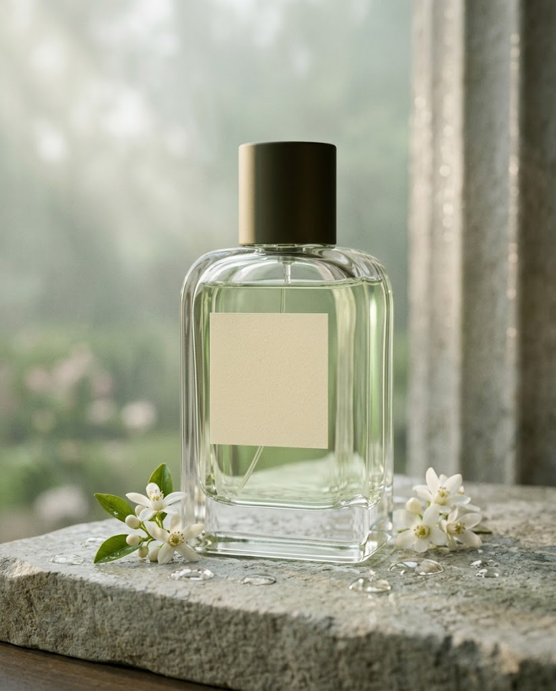
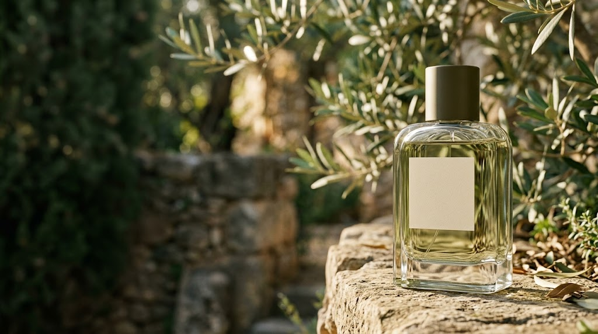
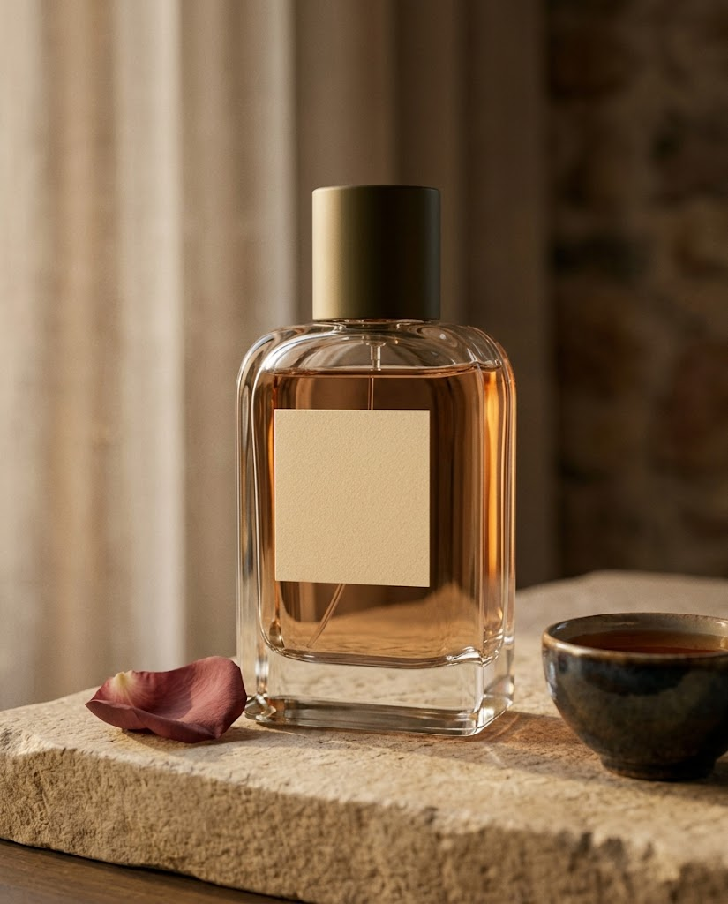
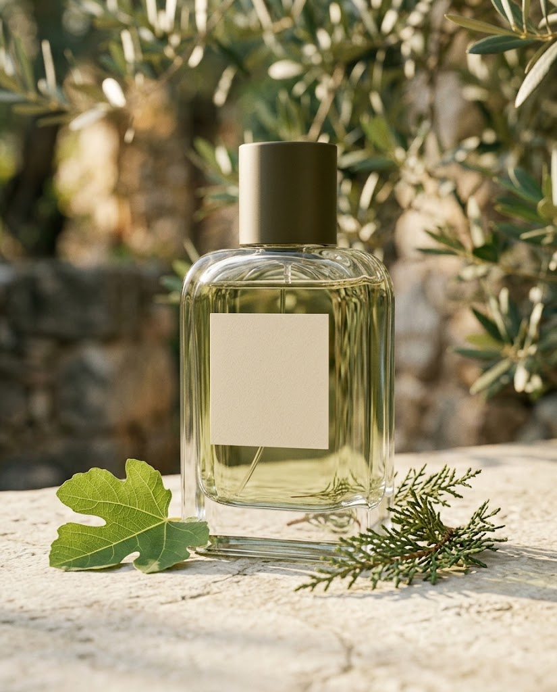
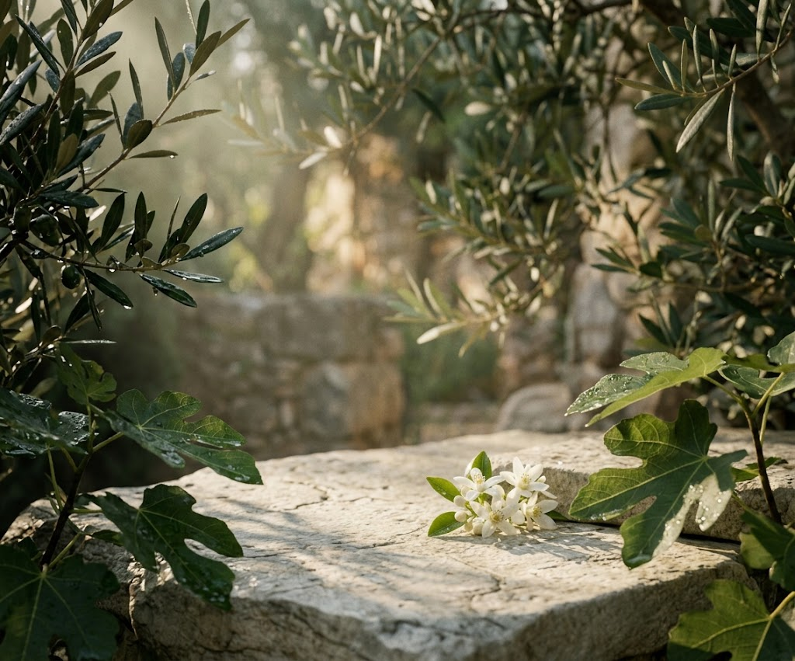

01 / 03

SEREINBRUME · EAU DE PARFUMBrume
Кедр · инжир · белый мускус

Ароматы для моментов, когда мир становится чуть тише. Созданы из тонких природных нот и воспоминаний, к которым хочется возвращаться.
Мы верим, что аромат не должен говорить громче вас. Он остаётся рядом — как тёплый свет в окне, след дождя на камне или страница любимой книги.
Каждая композиция Serein раскрывается постепенно: сначала легко, потом глубже, а в конце становится частью вашей собственной истории.
Почувствовать ноты ↗Каждый аромат создан как приглашение замедлиться и заметить красоту вокруг.

SEREINBRUME · EAU DE PARFUMКедр · инжир · белый мускус

SEREINSOIR · EAU DE PARFUMАмбра · роза · чёрный чай

SEREINAUBE · EAU DE PARFUMНероли · мох · первый дождь

Мы работаем с парфюмерами, которые выбирают ингредиенты по их происхождению, а не по громкости. Стекло, бумага и каждая нота подчинены одному чувству — спокойствию.
Что внутри ↗Три слоя, которые звучат по-разному на каждом человеке — и остаются только вашими.
Бергамот, нероли и прохладный воздух после утреннего дождя.
Лист инжира, чайная роза и тёплая древесина кедра.
Белый мускус, мох и мягкая амбра на коже.
«Не нужно быть громким, чтобы тебя запомнили.»Найди аромат, который говорит твоим голосом